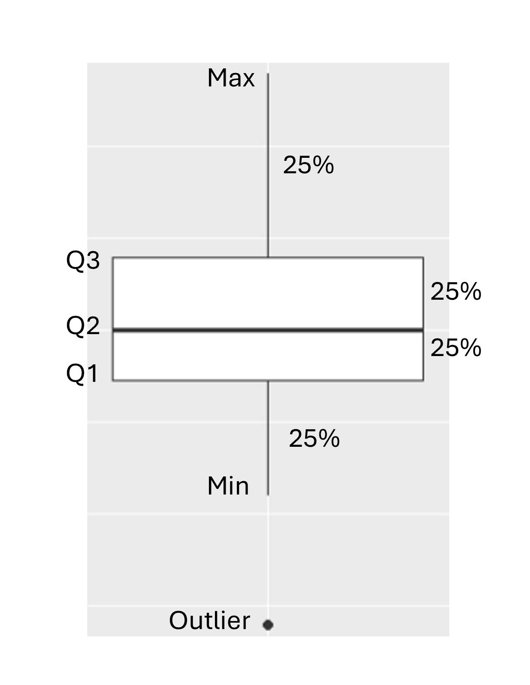
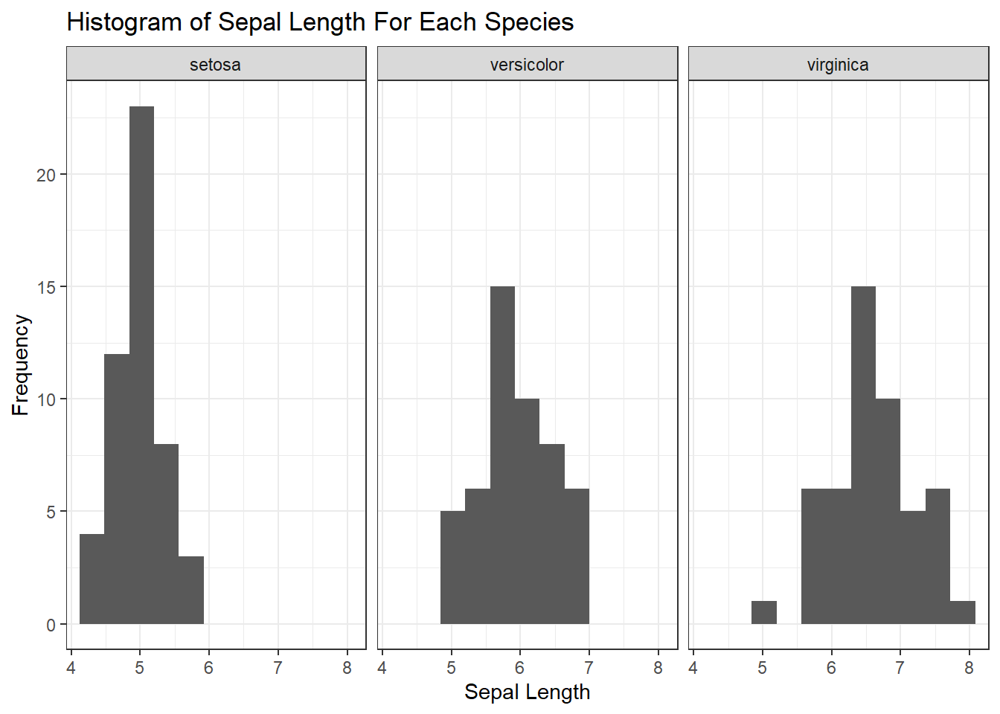
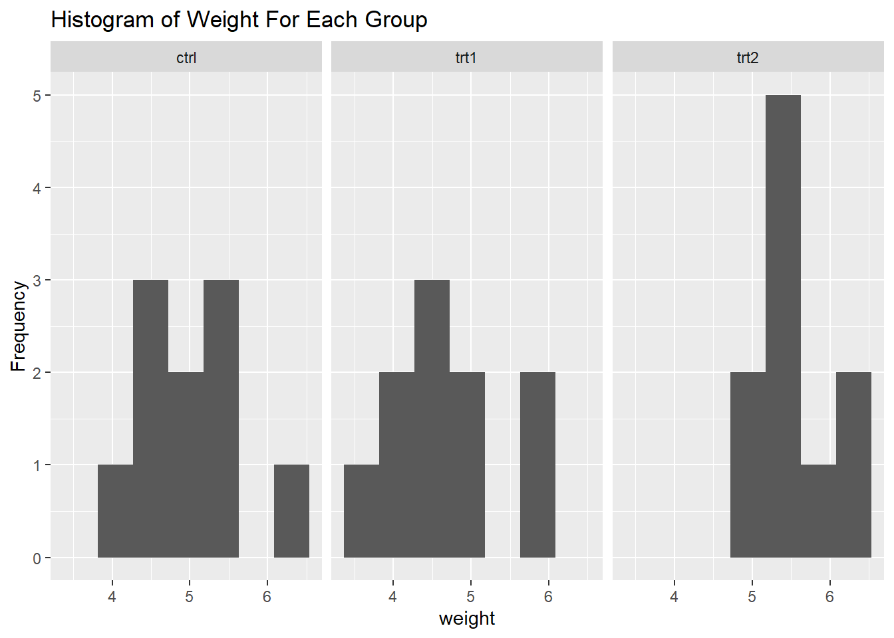

Lesson 2 Exploring Data
2.2 The Structure of Data
Data should be structured using tables in which
- each column represents a variable
- the values in each column are the same type and the same unit
- the first row contains the names of the variables without any spaces
In the following table, the first four columns are quantitative continuous variables. The last column is a qualitative variable used to group the measurements for each of the species.
Sepal.Length Sepal.Width Petal.Length Petal.Width Species
5.1 3.5 1.4 0.2 setosa
4.9 3.0 1.4 0.2 setosa
4.7 3.2 1.3 0.2 setosa
4.6 3.1 1.5 0.2 setosa
5.0 3.6 1.4 0.2 setosa
5.4 3.9 1.7 0.4 setosa2.3 Common Statistical Plots
In school we usually use the word “graph”, but statisticians usually use the word “plot”.
The following plots use the well-known Iris dataset that is frequently used for demonstration purposes. The dataset contains measurements of flower parts for three species of Iris.
2.3.1 Boxplot
Boxplots are used to
- show the distribution of data for each quartile of a quantitative variable.
- identify outliers
- compare groups

The following boxplots show the distribution of Sepal Length grouped by species.

2.3.2 Histogram
Histograms are used to help identify the type of distribution from which the data was drawn.

The histograms confirm that the distribution of Sepal.Length is approximately symmetrical for each species. This suggests that a normal distribution might be an appropriate model in each case. Also notice that there is an outlier in the virginica species, as was identified by the boxplot.


2.4 Exploratory Data Analysis (EDA)
Once the study has been designed and executed, it’s time to begin analysing the results. The first step in analysis is getting to know the dataset. The steps of exploratory data analysis (EDA) include
- summarising quantitative variables - min, max, quantiles, mean, standard deviation
- using boxplots and histograms to investigate spread and skewness
- using scatter plots to investigate associations between quantitative variables
- using grouping variables to investigate the similarities and differences between groups
2.5 Activity
Use the PlantGrowth dataset and a spreadsheet to
- Create a summary of the quantitative variable for each group including min, max, quantiles, mean, standard deviation
- Create boxplots of the quantitative variable for each group in the dataset.
- Create histograms of the quantitative variable for each group in the dataset.
- Write a summary of your observations. Can you suggest any hypotheses?
Hint: You will need to reorganise the data so there is on group per column.
2.5.1 Solutions
Rows: 30
Columns: 2
$ weight <dbl> 4.17, 5.58, 5.18, 6.11, 4.50, 4.61, 5.17, 4.53, 5.33, 5.14, 4.8…
$ group <fct> ctrl, ctrl, ctrl, ctrl, ctrl, ctrl, ctrl, ctrl, ctrl, ctrl, trt…# A tibble: 3 × 8
group Min Q1 Median_Q2 Q3 Max Mean SD
<fct> <dbl> <dbl> <dbl> <dbl> <dbl> <dbl> <dbl>
1 ctrl 4.17 4.55 5.15 5.29 6.11 5.03 0.583
2 trt1 3.59 4.21 4.55 4.87 6.03 4.66 0.794
3 trt2 4.92 5.27 5.44 5.74 6.31 5.53 0.443

The ctrl group is slightly negatively skewed (Mean = 5.032 versus Median = 5.155). The greatest variation occurs on the trt1 group (SD = 0.79), and the least in the trt2 group (SD = 0.44). The boxplots show that the trt1 group has potential outliers at the upper values.